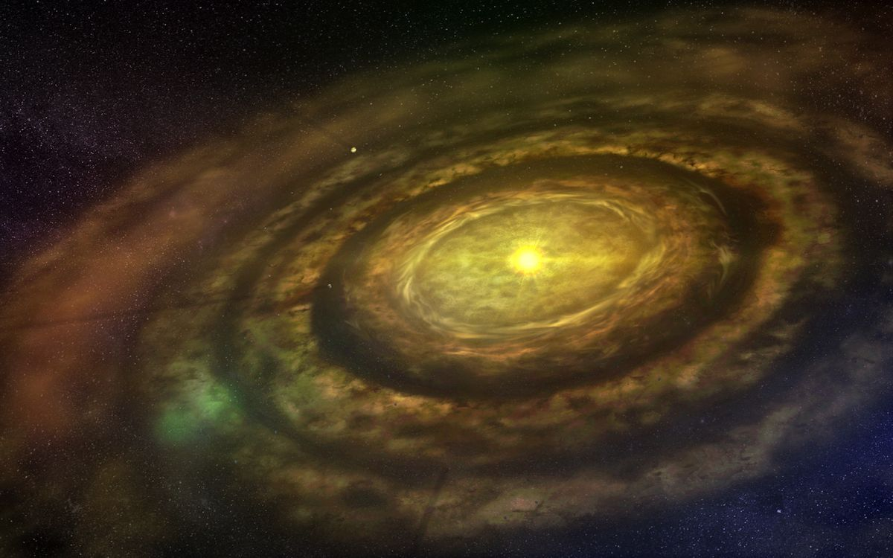
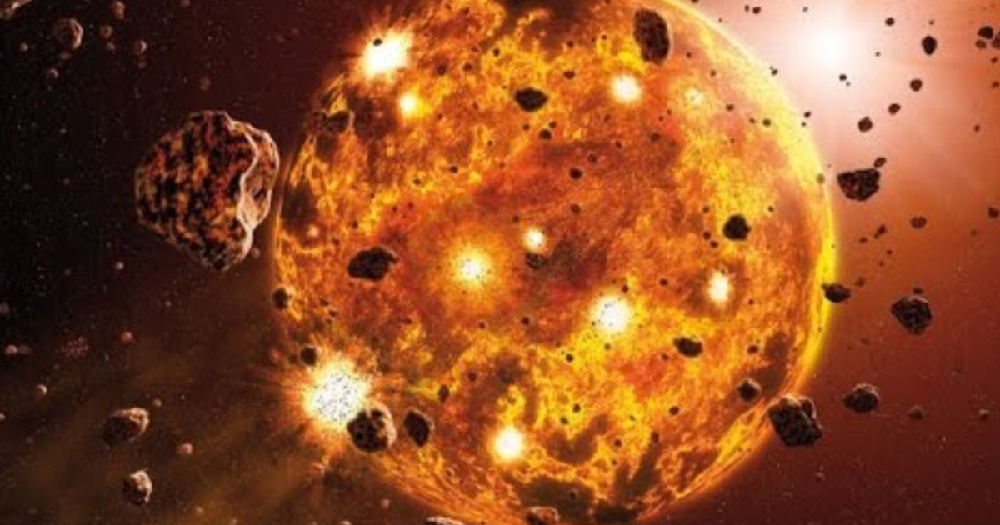
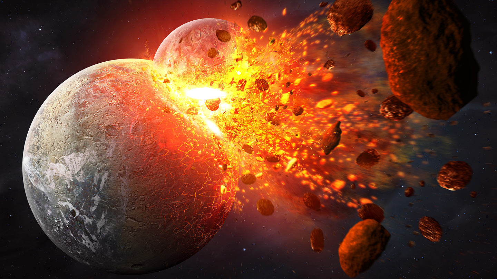
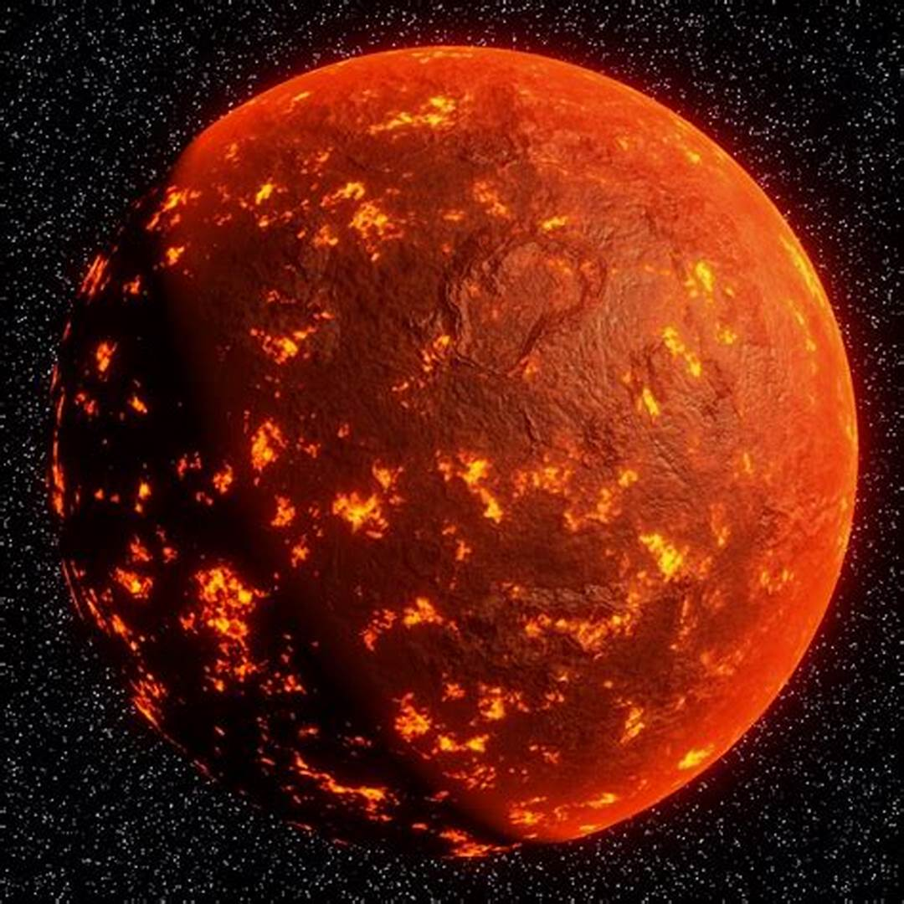
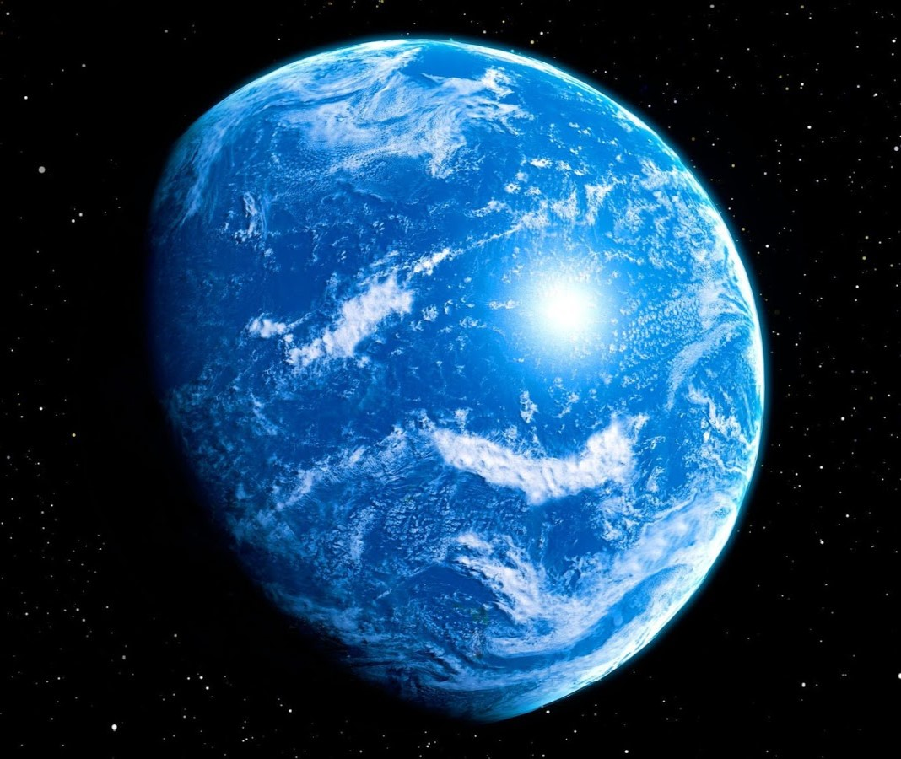

Accretion Of Dust And Gases: Earth formed from the solar nebula, a cloud of dust and gas left over from the formation of the Sun.
Frequent Collisions: The early Earth experienced numerous collisions with planetesimals and other celestial bodies, contributing to its growth and heat.
 Giant Impact Hypothesis: The Moon likely formed as a result of a colossal impact between the early Earth and a Mars-sized body named Theia. This collision ejected material that eventually coalesced to form the Moon.
Molten Surface: The Earth’s surface was initially molten due to the heat from accretion and radioactive decay.
Formation Of The Crust: As the planet cooled, a solid crust began to form, although it was frequently remelted by continued impacts and volcanic activity.
Early Atmosphere: The atmosphere was likely composed of hydrogen, helium, and other volcanic gases. It was very different from the oxygen-rich atmosphere we have today.
Condensation Of Water Vapor: As the Earth cooled, water vapor in the atmosphere condensed to form liquid water, leading to the creation of the first oceans.
Superocean: It is hypothesized that Earth may have been covered by a global ocean during this time, with very little landmass.
Foundation For Life: The conditions and events of the Hadean Eon set the stage for the later development of life. The formation of a stable crust, oceans, and an atmosphere were critical steps in making Earth a habitable planet.